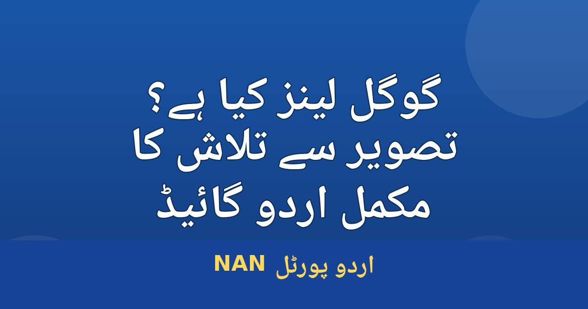

گوگل لینز کیا ہے؟ تصویر سے تلاش کا مکمل اردو گائیڈ

کیا آپ نے کبھی کسی پودے، جانور، جوتے یا کسی خوبصورت جگہ کی تصویر دیکھی اور سوچا کہ یہ کیا ہے یا کہاں سے ملے گا؟ گوگل لینز اسی سوال کا جواب ہے۔ یہ گوگل کی ایک مفت ایپ اور سہولت ہے جو آپ کے موبائل کیمرے یا کسی بھی تصویر کو دیکھ کر بتا دیتی ہے کہ اس میں کیا ہے — نام، قیمت، ترجمہ اور مزید معلومات، سب کچھ چند سیکنڈ میں۔ اس مضمون میں گوگل لینز کیا ہے، اسے موبائل پر کیسے استعمال کریں، اردو متن کا ترجمہ کیسے کریں اور خریداری و پڑھائی میں اس سے کیسے فائدہ اٹھائیں، سب کچھ قدم بہ قدم بتایا گیا ہے۔
1۔ گوگل لینز کیا ہے؟
گوگل لینز مصنوعی ذہانت (اے آئی) پر مبنی ایک بصری تلاش کی سہولت ہے۔ عام گوگل سرچ میں آپ الفاظ لکھ کر تلاش کرتے ہیں، جبکہ گوگل لینز میں آپ تصویر دکھا کر تلاش کرتے ہیں۔ کیمرہ کسی چیز کی طرف کریں یا گیلری سے تصویر منتخب کریں — لینز اس تصویر کو پہچان کر متعلقہ معلومات دکھا دیتا ہے۔ مثلاً آپ کسی پھول کی تصویر لیں تو لینز اس کا نام، قسم اور دیکھ بھال کا طریقہ بتا دے گا۔ کسی کتاب کے سرورق کی تصویر لیں تو مصنف، قیمت اور آن لائن خریداری کے لنک مل جائیں گے۔ یہ سہولت مکمل طور پر مفت ہے اور اینڈرائیڈ اور آئی فون دونوں پر دستیاب ہے۔
2۔ گوگل لینز موبائل پر کیسے کھولیں؟
گوگل لینز استعمال کرنے کے کئی آسان طریقے ہیں، اور زیادہ تر موبائلز میں یہ پہلے سے موجود ہوتا ہے:
- گوگل ایپ سے: اپنے موبائل میں گوگل ایپ کھولیں — سرچ بار کے دائیں جانب کیمرے والا لینز آئیکن نظر آئے گا، اس پر ٹیپ کریں۔
- گوگل سرچ بار وِجٹ سے: ہوم اسکرین پر گوگل سرچ وِجٹ میں بھی لینز کا آئیکن موجود ہوتا ہے۔
- کیمرہ ایپ سے: کئی اینڈرائیڈ موبائلز میں کیمرہ ایپ کے اندر ہی لینز کا آپشن ہوتا ہے — کیمرہ کھول کر لینز موڈ منتخب کریں۔
- الگ ایپ ڈاؤن لوڈ کریں: اگر آپ کے موبائل میں لینز نہیں ہے تو پلے اسٹور سے "Google Lens" لکھ کر مفت ایپ ڈاؤن لوڈ کر لیں۔
- آئی فون پر: آئی فون صارفین گوگل ایپ ڈاؤن لوڈ کر کے اسی میں موجود لینز آئیکن سے یہ سہولت استعمال کر سکتے ہیں۔
لینز کھولنے کے بعد کیمرے کو کسی چیز کی طرف کریں یا نیچے گیلری کے آئیکن سے پہلے سے موجود تصویر منتخب کریں۔ لینز چند سیکنڈ میں تصویر کا تجزیہ کر کے نتائج دکھا دے گا۔
3۔ گوگل لینز سے کیا کچھ تلاش کیا جا سکتا ہے؟
گوگل لینز کے استعمال بے شمار ہیں۔ روزمرہ زندگی میں یہ سات کام سب سے زیادہ مفید ہیں:
- پودے اور جانور پہچاننا: کسی پودے، پھول یا جانور کی تصویر لیں اور اس کا نام جانیں۔
- متن کاپی کرنا: کتاب، بورڈ یا کاغذ پر لکھا متن کیمرے سے اسکین کر کے اپنے موبائل میں کاپی کر لیں — نوٹس بنانا اب بہت آسان۔
- ترجمہ کرنا: کسی دوسری زبان میں لکھا متن — جیسے انگریزی، عربی یا چینی — کیمرے سے اردو میں ترجمہ کر کے پڑھیں۔
- خریداری: کسی جوتے، کپڑے یا فرنیچر کی تصویر لیں اور دیکھیں کہ وہی چیز آن لائن کہاں اور کتنی قیمت پر مل رہی ہے۔
- مشہور جگہیں: کسی عمارت یا تاریخی مقام کی تصویر سے اس کا نام اور تاریخ معلوم کریں۔
- بار کوڈ اور کیو آر کوڈ: لینز بار کوڈ اور کیو آر کوڈ بھی پڑھ لیتا ہے۔
- ہوم ورک میں مدد: ریاضی کا سوال یا سائنس کا ڈایاگرام اسکین کر کے اس کا حل اور وضاحت حاصل کریں۔
4۔ تصویر سے متن (ٹیکسٹ) کاپی کرنے کا طریقہ
طلبہ اور دفتری کام کرنے والوں کے لیے لینز کی سب سے قیمتی سہولت تصویر سے متن نکالنا ہے۔ گوگل لینز کھولیں، کیمرہ کتاب کے صفحے یا دستاویز کی طرف کریں اور نیچے "ٹیکسٹ" (Text) آپشن منتخب کریں۔ لینز الفاظ کو پہچان کر انہیں منتخب کرنے کے قابل بنا دے گا — جس حصے کو چاہیں منتخب کر کے "کاپی ٹیکسٹ" پر ٹیپ کریں، اور متن کلپ بورڈ میں محفوظ ہو جائے گا۔ اسے پھر نوٹس ایپ یا واٹس ایپ میں چسپاں کیا جا سکتا ہے۔ یہ سہولت اردو متن پر بھی کام کرتی ہے۔
5۔ کیمرے سے فوری ترجمہ کیسے کریں؟
اگر آپ کے سامنے کوئی بورڈ، مینیو یا کتاب انگریزی یا کسی اور زبان میں لکھی ہو اور آپ اردو میں سمجھنا چاہیں تو لینز کا ترجمہ موڈ استعمال کریں۔ لینز کھول کر نیچے "ٹرانسلیٹ" (Translate) آپشن منتخب کریں، زبان کی ترتیب میں اوپر کی زبان (مثلاً انگریزی) اور نیچے اردو منتخب کریں، پھر کیمرہ متن کی طرف کریں۔ لینز ترجمہ شدہ اردو متن براہِ راست تصویر کے اوپر دکھا دے گا — جیسے وہ متن اصل میں اردو میں ہی لکھا ہو۔ یہ سہولت سفر کے دوران ہوٹل کے مینیو، سائن بورڈ یا ہدایات پڑھنے میں بہت کام آتی ہے، اور اس کے لیے انٹرنیٹ کی ضرورت ہوتی ہے۔
6۔ تصویر سے خریداری — وہی چیز آن لائن تلاش کریں
بازار میں کوئی چیز پسند آ جائے اور قیمت زیادہ لگے تو لینز سے اس کی آن لائن قیمت معلوم کی جا سکتی ہے۔ لینز میں "شاپنگ" (Shopping) آپشن منتخب کر کے چیز کی تصویر لیں — لینز وہی چیز بیچنے والی ویب سائٹس قیمت سمیت دکھا دے گا، تاکہ آپ قیمتیں موازنہ کر کے بہتر فیصلہ کر سکیں۔ خیال رہے کہ خریداری آپ کو خود متعلقہ ویب سائٹ پر جا کر کرنی ہوتی ہے، اس لیے ادائیگی سے پہلے ویب سائٹ کی ساکھ ضرور جانچیں۔
7۔ گوگل لینز بمقابلہ گوگل سرچ — کیا فرق ہے؟
گوگل سرچ میں آپ کو پہلے سے معلوم ہونا چاہیے کہ آپ کیا تلاش کر رہے ہیں اور اسے الفاظ میں بیان کر سکیں۔ لیکن جب آپ کسی چیز کا نام ہی نہیں جانتے — جیسے کوئی پودا، کیڑا یا پرانی عمارت — تو الفاظ سے تلاش ممکن نہیں۔ یہیں گوگل لینز کام آتا ہے: یہ تصویر کو سوال بنا دیتا ہے۔ لینز تصویر کے اندر چھپی معلومات — جیسے متن، بار کوڈ اور قیمت — بھی نکال لیتا ہے۔ تاہم تازہ خبریں اور تفصیلی مضامین کے لیے عام گوگل سرچ ہی بہتر رہتی ہے۔
8۔ بہتر نتائج کے لیے 5 آزمودہ نکات
- اچھی روشنی: تصویر صاف اور روشن روشنی میں لیں — اندھیرے یا دھندلی تصویر میں لینز چیز کو صحیح پہچان نہیں پاتا۔
- قریب سے تصویر: چیز کو فریم کے بیچ میں رکھیں اور پس منظر صاف رکھیں، تاکہ لینز اصل چیز پر توجہ دے۔
- صحیح موڈ منتخب کریں: نیچے موجود موڈ — سرچ، ٹیکسٹ، ٹرانسلیٹ، شاپنگ یا ہوم ورک — اپنے کام کے مطابق منتخب کریں۔
- حصہ منتخب کریں: اگر تصویر میں کئی چیزیں ہوں تو انگلی سے اس حصے کو گھیر لیں جس کے بارے میں جاننا ہے۔
- انٹرنیٹ آن رکھیں: لینز کے زیادہ تر نتائج کے لیے انٹرنیٹ ضروری ہے — وائی فائی یا موبائل ڈیٹا آن رکھیں۔
9۔ پرائیویسی اور احتیاطی تدابیر
گوگل لینز استعمال کرتے ہوئے چند باتوں کا خیال رکھنا ضروری ہے۔ لینز آپ کی تصاویر گوگل کے سرورز کو بھیج کر تجزیہ کرتا ہے، اس لیے اپنی یا دوسروں کی نجی تصاویر، شناختی کارڈ یا بینک کارڈ اسکین نہ کریں۔ کسی دوسرے شخص کی تصویر بغیر اجازت کے اسکین کر کے اس کی شناخت معلوم کرنے کی کوشش نہ کریں۔ اور یاد رکھیں کہ لینز کی معلومات ہمیشہ سو فیصد درست نہیں ہوتیں — خاص طور پر پودوں یا دواؤں کے معاملے میں ماہر سے تصدیق ضرور کریں۔
10۔ اکثر پوچھے جانے والے سوالات
سوال: کیا گوگل لینز مفت ہے؟
جواب: جی ہاں، گوگل لینز مکمل طور پر مفت ہے — اس کے لیے کوئی فیس یا سبسکرپشن نہیں۔
سوال: کیا گوگل لینز اردو متن پڑھ سکتا ہے؟
جواب: جی ہاں، لینز اردو متن پہچان اور کاپی کر سکتا ہے، اور دوسری زبانوں کا ترجمہ بھی اردو میں کر دیتا ہے۔
سوال: کیا گوگل لینز کے لیے انٹرنیٹ ضروری ہے؟
جواب: زیادہ تر سہولتوں کے لیے انٹرنیٹ ضروری ہے، کیونکہ تصویر کا تجزیہ گوگل کے سرورز پر ہوتا ہے۔
سوال: کیا گوگل لینز ہر موبائل میں چلتا ہے؟
جواب: اینڈرائیڈ اور آئی فون دونوں پر گوگل ایپ کے ذریعے چلتا ہے۔ بہت پرانے موبائلز میں ایپ اپ ڈیٹ کرنا ضروری ہو سکتا ہے۔
سوال: کیا لینز سے چہرہ پہچانا جا سکتا ہے؟
جواب: گوگل لینز عام لوگوں کے چہروں کی شناخت نہیں کرتا — یہ صرف مشہور شخصیات یا عوامی مقامات جیسی معلومات دکھا سکتا ہے، اور نجی چہروں کی تلاش کی اجازت نہیں دیتا۔
گوگل لینز ایک بار استعمال کرنے کے بعد روزمرہ کا حصہ بن جاتا ہے — طلبہ نوٹس بنانے میں اور عام صارف روزمرہ کے سوالات میں اس سے فائدہ اٹھا سکتے ہیں۔ آج ہی اپنے موبائل میں گوگل ایپ کھول کر لینز آزمائیں۔